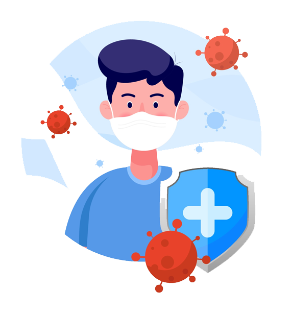

Bienvenido a nuestro proyecto de servicio comunitario
El mejor sitio de la comunidad para aprender las medidas de Prevencion!

Utilice una mascarilla de tres capas que se ajuste bien, especialmente cuando no sea posible mantener la distancia física, o en interiores. Límpiese las manos antes de ponerse y quitarse la mascarilla, no olvide desechar la mascarilla luego de utilizarla.
De ser posible, lleve consigo gel hidroalcohólico y utilícelo con frecuencia.
Cuando le llegue el turno, vacúnese. Seguir las orientaciones y recomendaciones locales sobre la vacunación.
Es importante lavarse frecuentemente las manos con agua y jabón.
Manténgase al menos a un metro de otras personas, incluso aunque no parezcan estar enfermas, puesto que es posible tener el virus sin manifestar síntomas.
Manténgase al menos a un metro de otras personas, incluso aunque no parezcan estar enfermas, puesto que es posible tener el virus sin manifestar síntomas.
En esta seccion podemos Observar la mayoria de sintomas del COVID-19
◉ Fiebre.
◉ Tos.
◉ Cansancio.
◉ Perdida del gusto o el olfato.
◉ Dolor de garganta.
◉ Dolor de cabeza.
◉ Dolores y molestias.
◉ Diarrea.
◉ Erupción en la piel o decoloración de los dedos de las manos o pies.
◉ Ojos rojos o irritados.
◉ Dificultad para respirar o falta de aire
◉ Pérdida del habla o la movilidad, o confusión
◉ Dolor en el pecho.
-Ayude a la persona enferma a seguir las instrucciones de cuidado y medicamentos de su médico.
-Pruebe si los medicamentos de venta sin receta médica ayudan a la persona a sentirse mejor.
-Procure que la persona enferma beba mucho líquido y descanse.
-Ayúdela con las compras de comestibles, a surtir sus medicamentos y acceder a otros artículos que puedan necesitar. Evalúe recurrir a un servicio de entrega a domicilio de los artículos siempre que sea posible.
-Tenga a mano el número de teléfono del médico de la persona que cuida.
-Use la herramienta de autoverificación de los CDC, que puede ayudarle a decidir si es necesario pedir atención médica.
-Si el estado de la persona empeora, llame a su médico. Para emergencias médicas, llame al 911 y dígale al operador de despacho que la persona tiene o podría tener COVID-19.
Esté atento a los signos de advertencia de emergencia* del COVID-19. Si alguien presenta alguno de estos signos, busque atención de servicios médicos de emergencia de inmediato:
-Dificultad para respirar.
-Dolor o presión persistente en el pecho.
-Confusión
-Incapacidad de despertarse o permanecer despierto
-Piel, labios o lechos de uñas pálidos, grises o azulados, según el tono de la piel